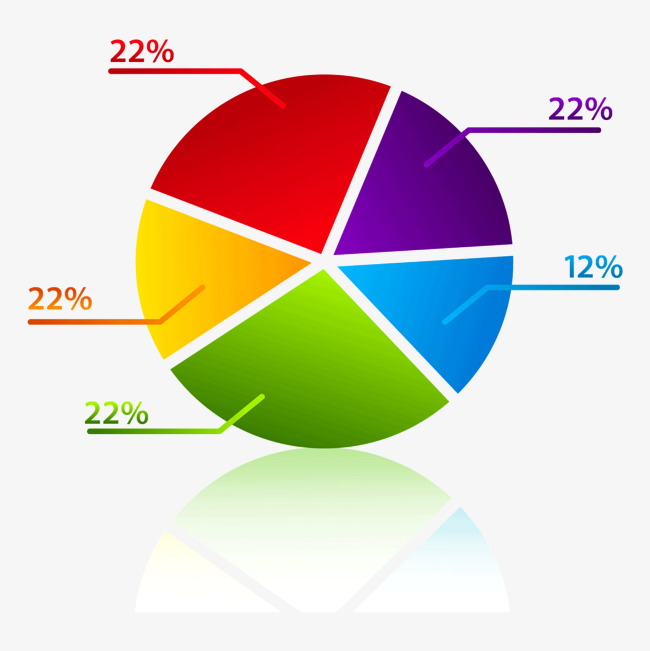

<nav class="navbar navbar-inverse">
        <div class="container-fluid">
            <div class="navbar-header">
                <a class="navbar-brand" routerLink ="/administrador">Encuestas SAG</a>
            </div>
            <ul  id="navbar" class="nav navbar-nav">
                <li class="pull-right"><a routerLink ="/login">Cerrar Sesión</a></li>
                <li><a href="#"></a></li>
                <!--<li><a href="#" style="color: white;"><?php echo $_SESSION['nombreUsuario']; ?></a></li>-->
            </ul>
        </div>
    </nav>

<script src="../Highcharts/code/highcharts.js"></script>
<script src="../Highcharts/code/highcharts-3d.js"></script>

<div class ="container ">
	<div class="row"> 
	  <div class="col-12 col-sm-10 col-md-8 col-lg-4 col-xl-4">
	    	<div class="card">
	     		<div class="card-img text-center">
	        		  
	      		</div>      
			</div>  
 		</div>

	  	<div class="col-12 col-sm-10 col-md-8 col-lg-4 col-xl-4">
	    	<div class="card">
	      		<div class=" text-center">
	        		  
	      		</div>   	      
	    	</div>  
	  	</div>

	  <div class="col-12 col-sm-10 col-md-8 col-lg-4 col-xl-4">
	    <div class="card">
	      <div class="card-img text-center">
	          
	      </div>    
	      
	    </div>  
	  </div>
	</div>
</div>

<script type="text/javascript">

	Highcharts.chart('container', 
		{
	    	chart: {
		        type: 'pie',
		        options3d: {
		            enabled: true,
		            alpha: 45,
		            beta: 0
	        	}
		    },
		    title: {
		        text: 'Reporte Municipio por Zonas'
		    },
		    tooltip: {
		        pointFormat: '{series.name}: <b>{point.percentage:.1f}%</b>'
		    },
		    plotOptions: {
		        pie: {
		            allowPointSelect: true,
		            cursor: 'pointer',
		            depth: 35,
		            dataLabels: {
		                enabled: true,
		                format: '{point.name}'
		            }
		        }
		    },
		    series: [{
		        type: 'pie',
		        name: 'ReporteZonas',
		        data: [
		            <?php 
		            	$consulta = "SELECT * FROM productores";
		                $contador1 = 0;
		                $contador2 = 0;
		                $contador3 = 0;
		                $contador4 = 0;
		                $contador5 = 0;

						if ($result_select = mysqli_query($conexion, $consulta)) {
						    while( $row = mysqli_fetch_array($result_select)){
		                        if ($row['idZona'] == 1) {
		                            $contador1 = $contador1+1;
		                        }
		                        if ($row['idZona'] == 2) {
		                            $contador2 = $contador2+1;
		                        }
		                        if ($row['idZona'] == 3) {
		                            $contador3 = $contador3+1;
		                        }
		                        if ($row['idZona'] == 4) {
		                            $contador4 = $contador4+1;
		                        }
		                        if ($row['idZona'] == 5 || $row['idZona'] == 6) {
		                            $contador5 = $contador5+1;
		                        }

		                    }
		                }
				    ?>
					['Zona 1', <?php echo "$contador1";?>],
                    ['Zona 2', <?php echo "$contador2";?>],
                    ['Zona 3', <?php echo "$contador3";?>],
                    ['Zona 4', <?php echo "$contador4";?>],
                    ['Zona 5', <?php echo "$contador5";?>]
				            
		        ]
		    }]
		});
</script>
